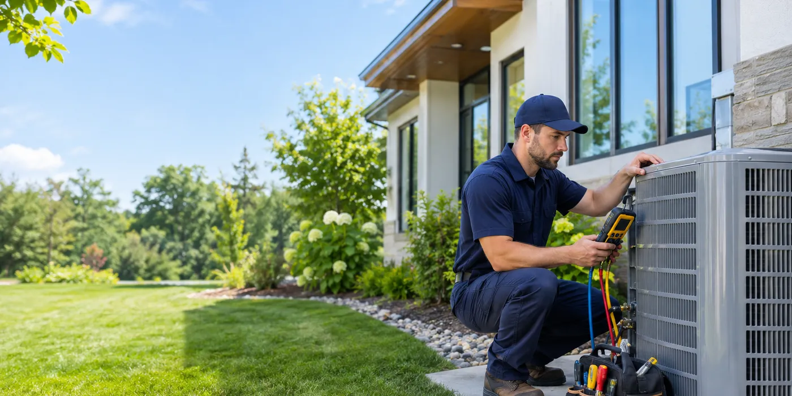

Air Conditioning Austin - Austin, TX
We handle air conditioning work for homes, apartments, offices, and shops across Austin, Rollingwood, West Lake Hills, and Lost Creek.
- Business
- Air Conditioning Austin
- Address
- 4803 Commercial Park Dr, Austin, TX 78724
- Phone
- (512) 635-7760
We're a Local Air Conditioning Company in Austin, TX
We work from 4803 Commercial Park Dr in Austin, TX, and cover homes and businesses in Austin, Rollingwood, West Lake Hills, and Lost Creek. Our technicians travel with tools, gauges, and replacement parts for air conditioning calls.
We take on AC repair, AC tune-up, air conditioner replacement, air conditioner installation, duct repair, and thermostat repair. We repair equipment in houses, apartments, offices, and shops, and replace air conditioners at properties throughout our service area.
A visit starts with our technician checking the thermostat, indoor unit, outdoor condenser, air filter, drain line, wiring, and refrigerant readings. We look for the source of the problem, note the condition of the equipment, and discuss findings before anybody talks about money.
Services we offer
The six jobs we are called out for most. Each has a page of its own, with what the work involves and what changes the price.
- 01AC RepairWarm air, water leaks, noises, and other AC faults checked in Austin.
- 02AC Tune-UpAC tune-up checks for filters, coils, controls, and drainage in Austin.
- 03Air Conditioner ReplacementWe replace aging and failed air conditioning systems across Austin and nearby areas.
- 04Air Conditioner InstallationWe install properly sized AC systems for homes across Austin and nearby areas.
- 05Duct RepairDuct repairs for loose, leaking, crushed, or disconnected runs in Austin.
- 06Thermostat RepairWall control diagnostics, wiring checks, and thermostat repair across Austin.
Hours of operation
| Monday | Open 24 hours |
| Tuesday | Open 24 hours |
| Wednesday | Open 24 hours |
| Thursday | Open 24 hours |
| Friday | Open 24 hours |
| Saturday | Open 24 hours |
| Sunday | Open 24 hours |